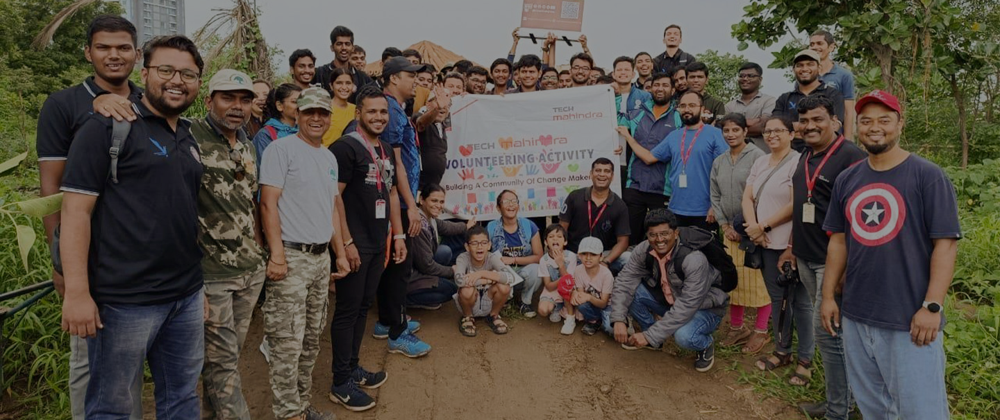

Building a
Better World
Building a
Better World
Bansilal Ramnath Agarwal Charitable Trust (BRACT) focuses on voluntary community service and aims to develop the personality and character of student youth.
+
Student Volunteers


Bansilal Ramnath Agarwal Charitable Trust (BRACT) drives a plethora of CSR activities that are conducted by the student community of its institutes.
+
Activities
+
Villages Covered
+
KG Plastic Eliminated
+
Trees Planted
The programs and activities help develop a sense of community and responsibility among the students while creating a social impact.
Stay informed and inspired with the latest BRACT news, upcoming events, and impactful stories from our student volunteers.
Tree Plantation Drive
BRACT had successfully completed a Tree Plantation Drive on 6th August 2023 in collaboration with Tech Mahindra with the participation of 30+ NSS volunteers... participating. This drive started at 8:00 AM at Anandvan-1, NIBM Road, Kondhwa, Pune. Thanks to the NSS volunteers who contributed their cause for the environment, 30+ trees were successfully planted. All required tools for tree plantation were provided by the Anandvan Foundation. At the event, Mr. Praveen Kumar Anand showed their presence as the chief of the event. Mr Manish Ghule guided volunteers on how to plant a tree, and gave their valuable guidance and support throughout the event.
Food Donation Drive
BRACT, in collaboration with team AISSEC, undertook a commendable initiative to contribute towards the community's well-being. This initiative involved... food donation drives at St. Crispin’s Home and Poona School and Home for the Blind. The event was successfully completed along with 30+ volunteers. This endeavour not only fulfilled the primary goal of providing essential resources but also succeeded in spreading awareness about social responsibility and compassion.

Plastic Waste Management
The “Plastic waste management” was a groundbreaking initiative aimed at raising awareness about the detrimental impact of plastic on the environment and... promoting sustainable alternatives. On 19th August 2023, BRACT had successfully organised this event for awareness on the harmful impact of plastic on our environment. 30+ volunteers and college students were present for this event. This drive started at 12:15 PM in front of E-Building VIIT College Pune. Throughout the event Prof. Nitin Sakhare, Prof. Vikas Kolekar, and Prof. Sharada Desai showed their presence and support for this event.
34A/1, Suyog Centre, 7th Floor, Market Yard Road, Gultekadi, Pune, Maharashtra 411037
Contact Us
Call
020-24525555
Email
bractspune@vit.edu
Office Timings
Monday to Friday | 10 am to 5 pm